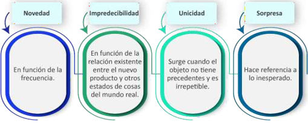
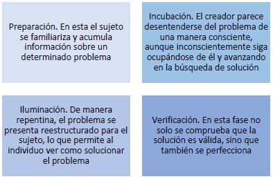
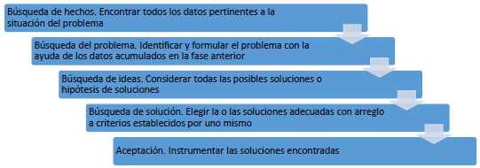
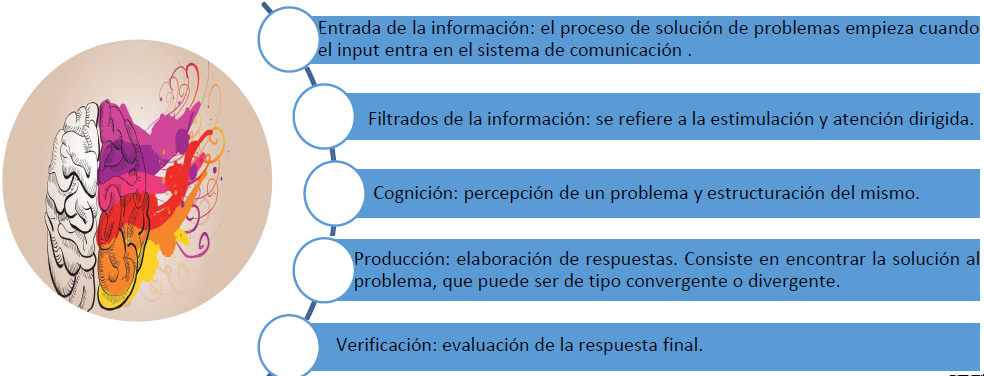
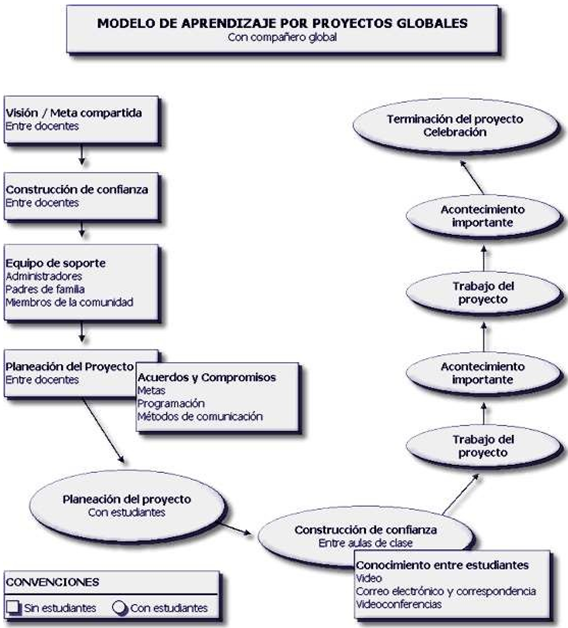
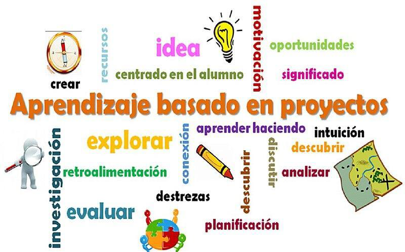
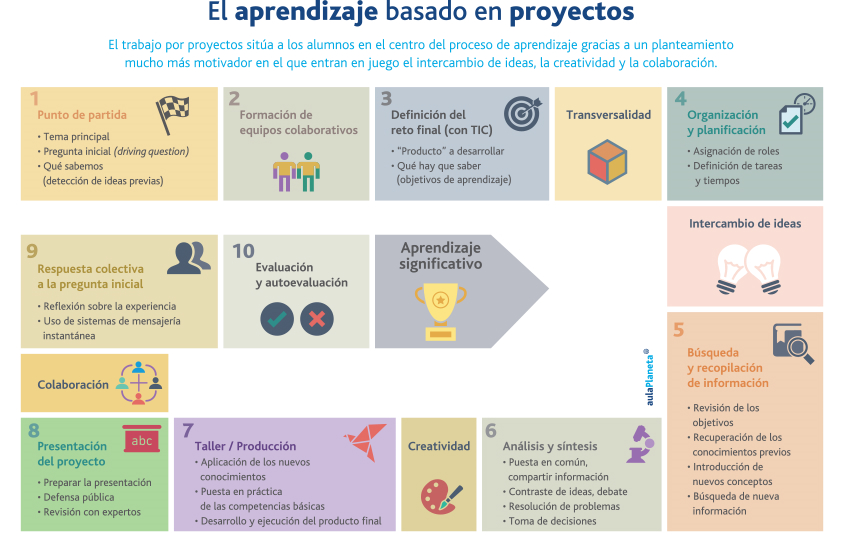
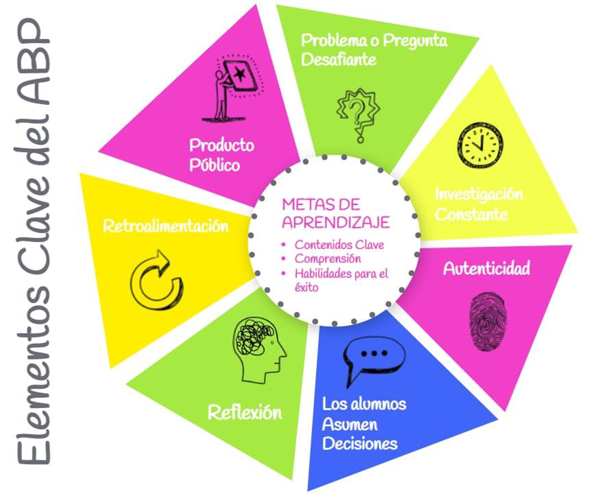
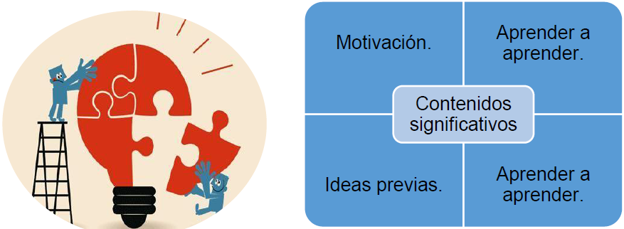
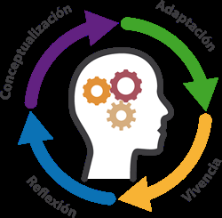

11 UNIDAD III: CREATIVIDAD EN LA EDUCACIÓN.
11.1 La teoría de la Creatividad.
Podemos definir la creatividad como la capacidad del individuo para producir ideas o productos nuevos u originales. Dicho de otra manera, la creatividad es un proceso cuyo resultado es un producto nuevo.
Davis (1976) afirmó que la característica específica más importante de un individuo creativo es la posesión de actitudes creativas, es decir, de rasgos de personalidad que le predisponen a pensar de una manera independiente, flexible o imaginativa.
11.1.1 Rasgos característicos de las personas creativas.
Alto coeficiente intelectual y alta fluidez y flexibilidad intelectual.
Pensamiento no convencional.
Independencia y autonomía.
Autodisciplina y autocontrol.
Perseverancia. (No esta en presentación final)
Alto nivel de aspiración de sí mismo.
Tolerancia a la ambigüedad.
Amplitud de intereses.
Preferencia por las tareas y las informaciones complejas. (No esta en presentación final)
Fuerte sentido del humor.
Por otra parte, el producto creativo es el resultado del proceso creativo. Para que un producto pueda ser calificado como creativo debe reunir características propias de la creatividad. Originalidad, es decir que ha de ser diferente, fuera de lo ordinario o de lo común.
Cualidades de un producto creativo:

Novedad: En función de la frecuencia
Impredecibilidad: En función de la relación existente entre el nuevo producto y otros estados de cosas del mundo real.
Unicidad: Surge cuando el objeto no tiene precedentes y es irrepetible
Sorpresa: Hace referencia a lo inesperado
11.2 Elementos del proceso creativo.
Los elementos que se consideran en un proceso creativo, dependen del modelo desde el cual se estudia la creatividad.
A continuación se presentan los modelos más representativos.
11.2.1 Modelo Wallas (1926)
Graham Wallas (1926) fue el primer autor que intentó una sistematización de las fases del proceso creador. Wallas señaló la existencia de cuatro fases en el proceso creativo:

Preparación. En esta el sujeto se familiariza y acumula información sobre un determinado problema.
Incubación. El creador parece desentenderse del problema de una manera consciente, aunque inconscientemente siga ocupándose de él y avanzando en la búsqueda de solución.
Iluminación. De manera repentina, el problema se presenta reestructurado para el sujeto, lo que permite al individuo ver como solucionar el problema.
Verificación. En esta fase no solo se comprueba que la solución es válida, sino que también se perfecciona.
11.2.2 Modelo de Parnes, Noller y Biondi (1977). Creative problem solving
Este modelo se basa fundamentalmente en la obtención de información de diferentes fuentes y no en una gran experiencia en la enseñanza de resolución creativa de problemas.
Los pasos para la resolución de problemas de estos autores son:

Búsqueda de hechos. Encontrar todos los datos pertinentes a la situación del problema
Búsqueda del problema. Identificar y formular el problema con la ayuda de los datos acumulados en la fase anterior
Búsqueda de ideas. Considerar todas las posibles soluciones o hipótesis de soluciones
Búsqueda de solución. Elegir la o las soluciones adecuadas con arreglo a criterios establecidos por uno mismo
Aceptación. Instrumentar las soluciones encontradas
11.2.3 Modelo de Amabile (1983)
Según Amabile, la forma en la que el individuo reúne y utiliza la información intentando llegar a la solución, respuesta o producto sería el siguiente:
Inicialmente, presentación del problema o de la tarea que va a ser resuelto. La motivación por la tarea tiene una importante influencia.
El segundo paso es preparatorio para la generación de respuestas o soluciones. Se construye un almacén de la información relevante del problema o tarea.
En el tercer paso se determina el nivel de novedad del producto o la respuesta. Las habilidades relacionadas con la creatividad y la motivación por la tarea juegan un papel importante en esta etapa.
En la cuarta fase, destacan las habilidades, aquí se determina si el producto o respuesta será apropiado, útil, correcto o válido.
Finalmente, el quinto paso representa la toma de decisiones, que se debe llevar a cabo, sobre la base de la prueba realizada en el cuarto paso.
Si la prueba ha pasado perfectamente, se ha alcanzado completamente el objetivo y el proceso terminó. Si hay un fracaso total, si no se ha generado una posibilidad de respuesta, el proceso también ha terminado.
Si hay algún progreso hacia el objetivo, si se ha generado una posibilidad de respuesta razonable, el proceso vuelve a la primera fase y el problema se plantea de nuevo.
11.2.4 Modelo Guilford (1967)
El modelo Guilford consta de cinco fases:
Entrada de la información: el proceso de solución de problemas empieza cuando el input entra en el sistema de comunicación.
Filtrados de la información: se refiere a la estimulación y atención dirigida.
Cognición: percepción de un problema y estructuración del mismo.
Producción: elaboración de respuestas. Consiste en encontrar la solución al problema, que puede ser de tipo convergente o divergente.
Verificación: evaluación de la respuesta final.

11.3 El aprendizaje como proceso creador. Aprendizaje metacognitivo.
La solución creativa de problemas favorece el aprendizaje de los alumnos mediante el desarrollo de proyectos globales y creativos. Existen algunas opciones a considerar entre las que se mencionan:
11.3.1 Aprendizaje por proyectos
El Aprendizaje por Proyectos (ApP) es, tanto una metodología de instrucción, como una estrategia utilizada en el mundo de los negocios y, además, un capítulo amplio dentro del universo de la pedagogía educativa. Por lo general, los docentes y estudiantes que utilizan esta metodología realizan trabajos en grupo y lo hacen sobre temas que ellos mismos escogen porque les interesan.

MODELO DE APRENDIZAJE POR PROYECTOS GLOBALES Con compañero global
Visión / Meta compartida: Entre docentes
Construcción de confianza: Entre docentes
Equipo de soporte: Administradores, Padres de familla, Miembros de la comunidad.
Planeación del Proyecto: Entre docentes
Acuerdos y Compromisos: Metas, Programación, Métodos de comunicación.
Planeación del proyecto: Con estudiantes
Construcción de confianza: Entre aulas de clase
Conocimiento entre estudientes: Video, Correo electrónico y correspondencia, Videoconferencias .
Trabajo del proyecto
Acontecimiento importante
Trabajo del proyecto
Acontecimiento importante
Terminación del proyecto: Celebración
CONVENCIONES: Sin estudiantes, Con estudiantes

Aprendizaje basado en proyectos - Luvia de ideas
Investigación
evaluar
retroalimentación
explorar
recurso
idea
centrado en el alumno
crear
motivación
oportunidades
significado
aprender haciendo
intuición
descubrir
analizar
descubrir
destrezas
conexión
discutir
planificación

El aprendizaje basado en proyectos
El trabajo por proyectos sitúa a los alumnos en el centro del proceso de aprendizaje gracias a un planteamiento mucho más motivador en el que entran en juego el intercambio de ideas, la creatividad y la colaboración.
1 Punto de partida • Tema principal • Pregunta inicial (driving question) Qué sabemos (detección de ideas previas)
2 Formación de equipos colaborativos
3 Definición del reto final (con TIC) “Producto” a desarrollar • Qué hay que saber (objetivos de aprendizaje)
Transversalidad
4 Organización y planificación Asignación de roles Definición de tareas y tiempos
Intercambio de ideas
5 Búsqueda y recopilación de información • Revisión de los objetivos Recuperación de los conocimientos previos Introducción de nuevos conceptos Búsqueda de nueva información
6 Análisis y síntesis Puesta en común, compartir información Contraste de ideas, debate Resolución de problemas Toma de decisiones
Creatividad
7 Taller/Producción Aplicación de los nuevos conocimientos Puesta en práctica de las competencias básicas Desarrollo y ejecución del producto final
8 Presentación del proyecto Preparar la presentación Defensa pública Revisión con expertos
Colaboración
9 Respuesta colectiva a la pregunta inicial Reflexión sobre la experiencia Uso de sistemas de mensajería
10 Evaluación y autoevaluación
Aprendizaje significativo

Elementos Clave del ABP
METAS DE APRENDIZAJE Contenidos Clave • Comprensión • Habilidades para el éxito
- Producto Público
- Retroalimentación
- Reflexión
- Problema o Pregunta Desafiante
- Investigación Constante
- Autenticidad
- Los alumnos Asumen Decisiones
11.3.2 Aprendizaje significativo
Según Ausubel (1968), el aprendizaje significativo se da “cuando el alumno relaciona los conceptos y les da sentido a partir de la estructura conceptual que ya posee: construye nuevos conocimientos a partir de los que ha adquirido anteriormente porque quiere y está interesado en ello.”
Para que el aprendizaje sea significativo debe cumplir varias condiciones:

• Contenidos significativos. Los contenidos de aprendizaje deben ser potencialmente significativos, desde el punto de vista de la lógica interna de la disciplina y de la estructura psicológica del alumnado.
• Motivación. En todo proceso de aprendizaje son fundamentales las actitudes de la persona, que dependen de la motivación, pues sin ésta no hay aprendizaje.
• Ideas previas. Es importante también que el alumnado sea consciente de las ideas previas que posee respecto al tema de estudio, pues aprender significativamente supone una intensa actividad mental para modificarlos propios esquemas de conocimiento. Desde esta perspectiva, el profesor pasa a ser el facilitador de los aprendizajes del alumno y para ello debe seleccionar materiales didácticos y formas docentes significativas.
• Aprender a aprender. Para que el individuo realice aprendizajes significativos es fundamental el papel que representa la memoria comprensiva, pues “para el niño pequeño pensar significa recordar; sin embargo, para el adolescente recordar significa pensar”. Según esto, la memoria no es sólo el recuerdo de lo aprendido sino la base para realizar nuevos aprendizajes; nos permite poseer esquemas de conocimiento, datos con los que pensar. Cuanto más ricos sean estos esquemas, más cantidad y más riqueza de conexiones podremos establecer con diferentes situaciones y contenidos. Sólo así será más fácil conseguir el objetivo prioritario de la intervención educativa: que los alumnos y las alumnas sean capaces de planificar y regular su propia actividad de aprendizaje; en definitiva, que aprendan a aprender.
• Ruptura y reconstrucción. La modificación de los esquemas de conocimiento tiene lugar a través de un proceso que pasa del equilibrio inicial al desequilibrio y a un reequilibrio posterior. El primer paso es romper el equilibrio inicial de los propios esquemas respecto al contenido del aprendizaje. El segundo consiste en lograr el reequilibrio modificando adecuadamente estos esquemas o construyendo otros nuevos.

Aprendizaje significativo
Conceptualización
Adaptación
Vivencia
Reflexión
11.4 Estrategias para el desarrollo de la Creatividad.
Fomentar el pensamiento creativo no resulta sencillo, ya que de no manejarlo adecuadamente podría llegar a convertirse en una especie de lujo de escasa importancia para las operaciones organizacionales.
A continuación, se presenta técnicas que ayudan a desarrollar adecuadamente la creatividad:
1. Los seis sombreros para pensar: Es el método más simple y contundente que existe; éste consiste en que cada uno de los asistentes a reuniones laborales deben ponerse uno u otro sombrero en función del momento y experimentar una sensación de libertad sin ser juzgados. Los sombreros blancos (hechos prácticos), rojo (sentimientos), negro (identificar problemas), amarillo (lógica positiva), verde (alternativas y soluciones) y azul (autoridad y responsabilidad) harán cambiar el pensamiento de los individuos sin llegar a ofenderlos.
2. La pausa creativa: Conocida como la suspensión del razonamiento dice que el experimentar bloqueos mentales no debe ser causa de frustración, al contrario, son estas interrupciones las que permiten el rápido flujo y la apertura de nuevas líneas de pensamiento. El autor explica que las pausas obligan al profesional a prestar atención a objetivos específicos y encontrar nuevas ideas.
3. El foco: Es la técnica que va a permitir centrar la atención a un aspecto que se utiliza como base para generar proyectos. La idea es identificar lo relevante de un asunto y trabajarlo posteriormente con toda la creatividad posible.
4. El cuestionamiento: Esto es algo muy particular, aquí se trata de evaluar si el modo actual de hacer algo es lo correcto; con las preguntas no sólo se busca una explicación, sino que se interroga también por qué la manera actual debe ser la única.
5. Las alternativas: Ésta es la operación básica de la creatividad, pero no es sencilla. En la búsqueda hay que detenerse cuando se está en una situación en la que el siguiente paso es fácil, muchas veces se encuentran nuevas y mejores opciones. A veces las alternativas están dadas, sólo es cuestión de elegir.
Técnicas de sensibilización
Consiste en proponer algo “para ver qué sucede”, el propósito es incorporar ideas en la mente a fin de generar líneas de pensamiento.
Aprovechando que, al estimular ciertas áreas del cerebro, éstas se preparan para tomar parte en las siguientes secuencias
6. El abanico de conceptos: Por medio de tres niveles, el profesional puede encontrar formas que se convertirán en el punto fijo para ideas alternas: las direcciones, que es la manera de concebir algo; el concepto, que es el método para hacerlo; y la idea, que es poner en práctica lo que se percibe.
7. Provocación y movimiento: En el camino surgen proyectos por accidente o error, pero no hay que esperar a que todo ocurra por azar, esta técnica permite al profesional ser temporalmente loco y explotar su creatividad, generando alternativas que no interesan si son o no correctas, sino que permitan desplazarse.
8. La aportación al azar: Se vuelve la técnica más simple para producir nuevas líneas de pensamiento e ideas a las que no se hubiera llegado mediante procedimientos lógicos o analíticos. Ésta resulta valiosa en situaciones de estancamiento y bloqueo, cuando no se sabe por dónde empezar.
9. Técnicas de sensibilización: Consiste en proponer algo “para ver qué sucede”, el propósito es incorporar ideas en la mente a fin de generar líneas de pensamiento, aprovechando que, al estimular ciertas áreas del cerebro, éstas se preparan para tomar parte en las siguientes secuencias.